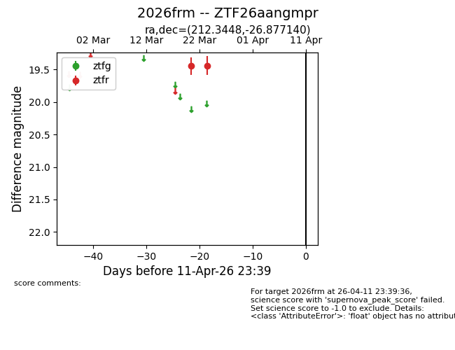
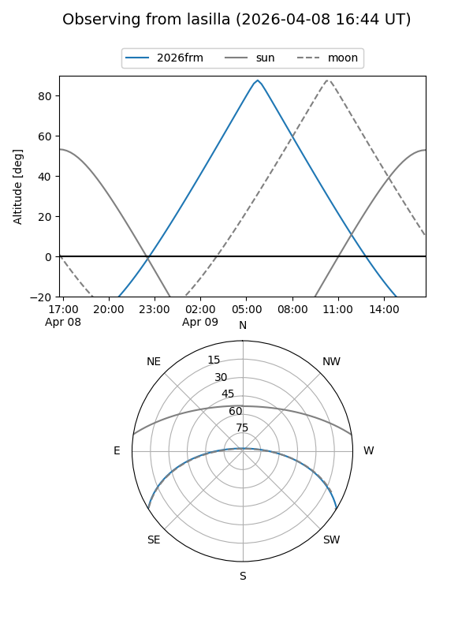
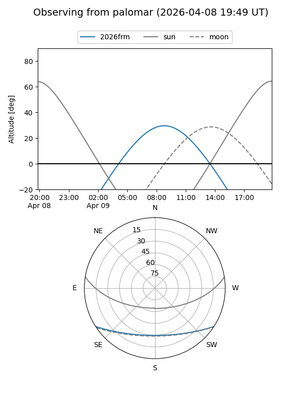

2026frm
Target 2026frm at 2026-04-11 23:48
Aliases and brokers:
FINK: link
Lasair: link
ALeRCE: link
TNS: link
YSE: link
alt names
ZTF26aangmpr (ztf,fink_ztf)
2026frm (tns,yse)
Coordinates:
equatorial (ra, dec) = 212.3448,-26.87714
equatorial (HMS+DMS) = 14:09:22.75,-26:52:37.70
galactic (l, b) = (323.6710,+32.83645)
Flags:
Photometry:
last ztfr=19.44
2 ztfr detections
Lightcurve

Visibility


Additional plots